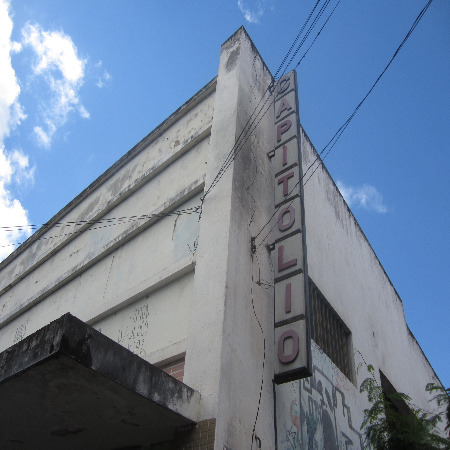

©2017 LabRua
Template: Bootstrapious
+ Kishan B

Vazios Centrais de Campina Grande-PB
O perímetro do Centro Histórico de Campina Grande protegido pelo IPHAEP vem passando por diversas transformações. A cidade cresce - perifericamente - e o Centro passa a ter cada vez mais espaços urbanos ociosos.
Embora seja uma área consolidada e dinâmica, bastante conhecida pelos comércios e serviços, os lotes e imóveis vazios estão dando espaço para um novo uso em especial, os estacionamentos. A área é bastante conhecida e utilizada pelos campinenses. Assim, buscamos atrair e contribuir para a formação do pensamento crítico da população acerca dos usos do solo impostos na cidade.

A pesquisa visa trazer contribuições com mapeamentos, classificações dos vazios existentes na área objeto de estudo e simulações. Tem como objetivo estudar e simular os usos que podem ser dados aos espaços vazios no Centro de Campina Grande, compreendendo a cidade a partir de uma leitura dinâmica das suas diversas configurações morfológicas e cumprindo a função social da propriedade.
Análises produzidas nesta pesquisa
- Atualização do mapa de uso e ocupação do solo do perímetro histórico
- Criação de formulários para caracterização de cada imóvel
- Mapa de áreas verdes livres
- Mapa dos espaços vazios e/ou espaços subutilizados
- Mapa dos edifícios que estão abandonados e/ou subutilizados
- Dados de categorização e quantificação dos espaços de acordo com seus usos
- Dados de impactos da existência desses vazios
- Simulação do adensamento desses vazios
- Investigação de possíveis usos para vazios;
Alguns resultados
Infográfico - A Botinha tá “Quase” Vazia.
Artigos Publicados:
[Artigo apresentado e publicado no TICYUrb'18 (Third International Conference of Young Urban Researchers) em Lisboae e na SAAU'19 (Semana Acadêmica de Arquitetura e Urbanismo do IESP) em João Pessoa-PB](../../pdf/Vazios Urbanos do Centro de Campina Grande_ Diagnóstico e Simulação_TicyURB_2018.pdf)
[Artigo apresentado no Fórum HABITAR 2019: Habitação e Desenvolvimento Sustentável em Belo Horizonte - MG.](../../pdf/A INSEGURANÇA NA RUA MACIEL PINHEIRO ATRAVÉS DO OLHAR DA MORFOLOGIA URBANA E A PERCEPÇÃO DE SEUS USUÁRIOS_fórumhabitar_set_2019.pdf)
Trabalhos de Conclusão de Curso dos pesquisadores:
[Cláudia Palmeira - Rua Maciel Pinheiro: Análise, Diagnóstico e Simulação de uso das suas edificações parcialmente ocupadas.](../../pdf/TCC Claudia Palmeira.pdf)
[Allyson Barbosa - Centro (re) Habitar: Reabilitação Urbana com diversidade habitacional no Centro de Campina Grande. ](../../pdf/TCC Allyson Barbosa.pdf)
[ Persio Padre - Aluízio Campos para quê? Outro caminho através de poliíticas habitacionais em centros urbanos.](../../pdf/TCC Persio Padre.pdf)